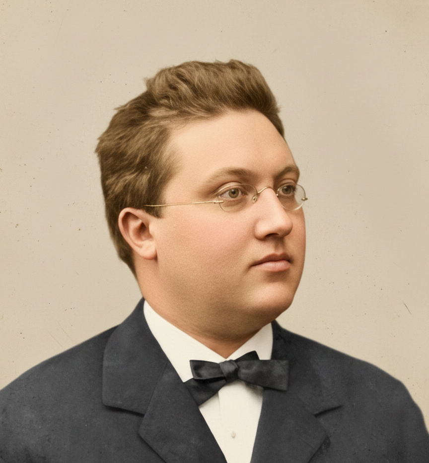

Gegenbauer polynomials and positive semidefinite Gram matrices
In the previous post, we met Gegenbauer polynomials as the zonal spherical harmonics on the unit sphere \(S^{d-1}\). In this note, I will use that viewpoint to prove a simple but useful fact:
If \(x_1,\dots,x_n \in S^{d-1}\) are unit vectors in \(\mathbb{R}^d\) and \[ G_{ij} = x_i \cdot x_j \] is their Gram matrix, then applying a Gegenbauer polynomial \(C_\ell^{(\alpha)}\) entrywise to \(G\) produces another positive semidefinite matrix.
Equivalently, the kernel \[ K_\ell(x,y) = C_\ell^{(\alpha)}(x \cdot y), \qquad x,y \in S^{d-1}, \] is positive semidefinite on the sphere. Here \(\alpha = d/2 - 1\) and \(\ell \ge 0\) is an integer.
This is the basic example of a rotation invariant kernel on the sphere. It is also a very concrete instance of the general principle
“irreducible spherical harmonics give positive definite kernels.”
I will keep the proof elementary and stay as close as possible to the differential operator viewpoint developed before.
Gram matrices and positive semidefinite kernels
A Gram matrix is built from vectors \(v_1,\dots,v_n\) in an inner product space: \[ G_{ij} = \langle v_i, v_j\rangle. \] By construction, \(G\) is always positive semidefinite. Indeed, for any \(u \in \mathbb{R}^n\): \[ u^\top G u = \sum_{i,j} u_i u_j \langle v_i, v_j\rangle = \Big\langle \sum_i u_i v_i, \sum_j u_j v_j \Big\rangle = \Big\|\sum_i u_i v_i\Big\|^2 \ge 0. \]
Now let \(X\) be a set and \(K\colon X \times X \to \mathbb{R}\) a function, usually called a kernel. For a finite family of points \(x_1,\dots,x_n \in X\), we can form the matrix \[ K(x_i,x_j)_{1 \le i,j \le n}. \] The kernel \(K\) is said to be positive semidefinite if all such matrices are positive semidefinite.
A simple way to produce psd kernels is to choose a feature map \(\Phi\colon X \to H\) into some Hilbert space and set \[ K(x,y) = \langle \Phi(x), \Phi(y)\rangle_H. \] Then \(K(x_i,x_j)\) is exactly the Gram matrix of the vectors \(\Phi(x_i)\).
The claim of this post is that the Gegenbauer kernel \(K_\ell(x,y) = C_\ell^{(\alpha)}(x \cdot y)\) has such a Gram representation, with the feature map given by degree \(\ell\) spherical harmonics.
Zonal spherical harmonics and Gegenbauer recap
Recall from the previous post:
A function \(f\colon S^{d-1} \to \mathbb{R}\) is zonal (with respect to a unit vector \(e\)) if \[ f(x) = F(\theta_1) = G(z), \] where \(\theta_1\) is the polar angle with respect to \(e\) and \(z = x \cdot e = \cos \theta_1\). In other words, \(f\) depends only on the inner product \(x \cdot e\).
The spherical Laplacian \(\Delta_{S^{d-1}}\) restricts on zonal functions to the one dimensional operator \[ \mathcal{L}_d f(z) = (1-z^2) f''(z) - (d-1) z f'(z), \qquad z \in [-1,1]. \]
Eigenfunctions of \(-\Delta_{S^{d-1}}\) that are zonal therefore satisfy the ordinary differential equation \[ (1-z^2) f''(z) - (d-1) z f'(z) + \lambda f(z) = 0. \]
If we write \(\alpha = d/2 - 1\), the eigenvalues of the spherical Laplacian are \(\lambda = \ell(\ell+d-2) = \ell(\ell+2\alpha)\) for integers \(\ell \ge 0\). The corresponding ODE \[ (1-z^2) y''(z) - (2\alpha+1) z y'(z) + \ell(\ell+2\alpha)\, y(z) = 0 \] is the Gegenbauer equation. It admits polynomial solutions of degree \(\ell\), denoted \(C_\ell^{(\alpha)}(z)\).
By construction, for any unit vector \(e \in S^{d-1}\), \[ Y_\ell(x) := C_\ell^{(\alpha)}(x \cdot e) \] is a zonal spherical harmonic of degree \(\ell\). Conversely, any zonal spherical harmonic of degree \(\ell\) is a nonzero scalar multiple of \(C_\ell^{(\alpha)}(x \cdot e)\).
This is the only property of Gegenbauer polynomials we will use.
Spherical harmonics via harmonic polynomials
A convenient way to define spherical harmonics of degree \(\ell\) is via ordinary polynomials on \(\mathbb{R}^d\). Let \(\mathcal{P}_\ell\) be the vector space of homogeneous polynomials of degree \(\ell\); it is finite dimensional because only finitely many monomials \(x^\alpha\) satisfy \(|\alpha|=\ell\). The Euclidean Laplacian is \(\Delta=\sum_{i=1}^d \partial_{x_i}^2\), and a polynomial \(P\in \mathcal{P}_\ell\) is harmonic if \(\Delta P=0\). Harmonic homogeneous polynomials form a finite dimensional subspace \(H_\ell^{\mathrm{poly}}\subset \mathcal{P}_\ell\). Restricting such a polynomial to the unit sphere, \[ Y(x)=P(x),\qquad \|x\|=1, \] produces a function satisfying the spherical Laplace eigenvalue equation \(-\Delta_{S^{d-1}} Y = \ell(\ell+d-2)Y\). These restrictions are the spherical harmonics of degree \(\ell\). A key fact is that this construction captures all eigenfunctions of the spherical Laplacian: every solution of \(-\Delta_{S^{d-1}} Y = \ell(\ell+d-2)Y\) arises uniquely as the restriction of some \(P\in H_\ell^{\mathrm{poly}}\). No additional angular eigenfunctions exist beyond those obtained from homogeneous harmonic polynomials, and each eigenspace of \(-\Delta_{S^{d-1}}\) corresponds exactly to one degree \(\ell\).
The harmonic kernel \(K_\ell\)
Fix a degree \(\ell \ge 0\) and let \(H_\ell\) be the space of spherical harmonics of degree \(\ell\) on \(S^{d-1}\). This is a finite dimensional subspace of \(L^2(S^{d-1})\).
Choose an orthonormal basis \[ \{Y_{\ell,1},\dots,Y_{\ell,d_\ell}\} \subset H_\ell, \] where the inner product is \[ \langle f,g\rangle = \int_{S^{d-1}} f(x) g(x)\, d\sigma(x), \] and \(d\sigma\) is the rotation invariant probability measure on the sphere.
Define the kernel \[ K_\ell(x,y) = \sum_{m=1}^{d_\ell} Y_{\ell,m}(x)\,Y_{\ell,m}(y), \qquad x,y \in S^{d-1}. \]
Several basic facts are immediate.
Basis independence. If we replace \(\{Y_{\ell,m}\}\) by another orthonormal basis \(\{Z_{\ell,m}\}\) of \(H_\ell\), the kernel \(K_\ell\) does not change.
Indeed, any two orthonormal bases are related by an orthogonal matrix \(A = (a_{mn})\): \[ Z_{\ell,m} = \sum_{n} a_{mn} Y_{\ell,n}. \] Then \[ \begin{aligned} \sum_m Z_{\ell,m}(x) Z_{\ell,m}(y) &= \sum_m \sum_{n,p} a_{mn} a_{mp} Y_{\ell,n}(x) Y_{\ell,p}(y) \\ &= \sum_{n,p} \Big(\sum_m a_{mn} a_{mp}\Big) Y_{\ell,n}(x) Y_{\ell,p}(y) \\ &= \sum_n Y_{\ell,n}(x) Y_{\ell,n}(y), \end{aligned} \] since \(A\) is orthogonal.
Harmonicity in each argument. For fixed \(y\), the function \(x \mapsto K_\ell(x,y)\) is a linear combination of the \(Y_{\ell,m}(x)\), so it lies in \(H_\ell\). It is therefore a spherical harmonic of degree \(\ell\). The same holds in the second argument.
Rotation invariance. Let \(R \in SO(d)\). Rotations act on functions by \[ (T_R f)(x) := f(R^{-1}x). \] This action preserves harmonicity and degree, and it is an isometry of \(L^2(S^{d-1})\). Therefore \(T_R\) maps \(H_\ell\) to itself and acts on \(H_\ell\) by an orthogonal matrix \(A(R) = (a_{mn}(R))\): \[ Y_{\ell,m}(R^{-1}x) = \sum_n a_{mn}(R) Y_{\ell,n}(x). \] Using this, \[ \begin{aligned} K_\ell(Rx,Ry) &= \sum_m Y_{\ell,m}(Rx)\,Y_{\ell,m}(Ry) \\ &= \sum_m \Big(\sum_n a_{mn}(R^{-1}) Y_{\ell,n}(x)\Big) \Big(\sum_p a_{mp}(R^{-1}) Y_{\ell,p}(y)\Big) \\ &= \sum_{n,p} \Big(\sum_m a_{mn}(R^{-1}) a_{mp}(R^{-1})\Big) Y_{\ell,n}(x) Y_{\ell,p}(y) \\ &= \sum_n Y_{\ell,n}(x) Y_{\ell,n}(y) \\ &= K_\ell(x,y), \end{aligned} \] since \(A(R^{-1})\) is orthogonal.
Summarizing: \(K_\ell\) is independent of the choice of basis, it is harmonic of degree \(\ell\) in each argument, and it is invariant under simultaneous rotation of both arguments.
From rotational invariance to a zonal form
Fix \(y \in S^{d-1}\) and consider the function \[ F_y(x) := K_\ell(x,y). \]
By definition, \(F_y \in H_\ell\), so it is a spherical harmonic of degree \(\ell\). Rotation invariance implies that it is zonal around \(y\).
To see this, take two points \(x_1,x_2 \in S^{d-1}\) with \[ x_1 \cdot y = x_2 \cdot y. \] There exists a rotation \(R \in SO(d)\) such that \(Ry = y\) and \(Rx_1 = x_2\). Using invariance of \(K_\ell\), \[ F_y(x_2) = K_\ell(x_2,y) = K_\ell(Rx_1,Ry) = K_\ell(x_1,y) = F_y(x_1). \] So \(F_y(x)\) depends only on the inner product \(x \cdot y\).
Therefore there exists a scalar function \(\Phi_\ell\colon [-1,1] \to \mathbb{R}\) such that \[ K_\ell(x,y) = \Phi_\ell(x \cdot y). \]
At the same time, for fixed \(y\), the function \(x \mapsto K_\ell(x,y)\) lies in \(H_\ell\), so it is a spherical harmonic of degree \(\ell\). Combined with the observation above, this means:
For each fixed \(y\), the function \(x \mapsto K_\ell(x,y)\) is a zonal spherical harmonic of degree \(\ell\).
The space of such functions is one dimensional and spanned by the Gegenbauer zonal harmonic \(C_\ell^{(\alpha)}(x \cdot y)\). Hence there exists a nonzero constant \(c_{\ell,d}\) such that \[ K_\ell(x,y) = c_{\ell,d}\, C_\ell^{(\alpha)}(x \cdot y), \qquad x,y \in S^{d-1}. \]
This is the addition theorem in exactly the form that is needed here. There is no need to compute \(c_{\ell,d}\).
From the addition theorem to positive semidefiniteness
Now take arbitrary points \(x_1,\dots,x_n \in S^{d-1}\) and form their Gram matrix \[ G_{ij} = x_i \cdot x_j. \] By definition, this matrix is positive semidefinite.
Next, build the \(n \times d_\ell\) matrix \(V\) of spherical harmonics of degree \(\ell\) evaluated at the points: \[ V_{i,m} := Y_{\ell,m}(x_i), \qquad 1 \le i \le n,\ 1 \le m \le d_\ell. \]
Using the definition of \(K_\ell\), \[ (V V^\top)_{ij} = \sum_{m=1}^{d_\ell} Y_{\ell,m}(x_i)\,Y_{\ell,m}(x_j) = K_\ell(x_i,x_j). \]
The addition theorem gives \[ K_\ell(x_i,x_j) = c_{\ell,d}\, C_\ell^{(\alpha)}(x_i \cdot x_j) = c_{\ell,d}\, C_\ell^{(\alpha)}(G_{ij}). \]
Therefore \[ (V V^\top)_{ij} = c_{\ell,d}\, C_\ell^{(\alpha)}(G_{ij}), \] or in matrix notation \[ C_\ell^{(\alpha)}[G] = \frac{1}{c_{\ell,d}}\, V V^\top. \]
Here \(C_\ell^{(\alpha)}[G]\) denotes the matrix obtained by applying the polynomial \(C_\ell^{(\alpha)}\) entrywise to \(G\). The right hand side is a Gram matrix, hence positive semidefinite.
Since scaling by a positive constant preserves positive semidefiniteness, we conclude:
For any points \(x_1,\dots,x_n \in S^{d-1}\), the matrix with entries \[ C_\ell^{(\alpha)}(x_i \cdot x_j) \] is positive semidefinite.
Equivalently, the kernel \[ K_\ell(x,y) = C_\ell^{(\alpha)}(x \cdot y) \] is positive semidefinite on the sphere.
Note that this statement is naturally formulated for correlation matrices, that is, Gram matrices of unit vectors. The domain of \(C_\ell^{(\alpha)}\) is the interval \([-1,1]\), which is exactly the range of inner products of unit vectors.
Interpretation
The proof makes the feature map completely explicit. The kernel \[ K_\ell(x,y) = C_\ell^{(\alpha)}(x \cdot y) \] is, up to a scalar factor, the Gram kernel of the map \[ \Phi_\ell\colon S^{d-1} \to \mathbb{R}^{d_\ell}, \qquad \Phi_\ell(x) = \big(Y_{\ell,1}(x),\dots,Y_{\ell,d_\ell}(x)\big). \] Indeed, \[ \langle \Phi_\ell(x), \Phi_\ell(y)\rangle = \sum_m Y_{\ell,m}(x) Y_{\ell,m}(y) = K_\ell(x,y) = c_{\ell,d}\, C_\ell^{(\alpha)}(x \cdot y). \]
From this point of view, applying the Gegenbauer polynomial to a Gram matrix is nothing more than computing the Gram matrix of the transformed points \(\Phi_\ell(x_i)\) in harmonic feature space.
More general positive semidefinite, rotation invariant kernels on the sphere arise as nonnegative combinations \[ f(t) = \sum_{\ell=0}^\infty a_\ell C_\ell^{(\alpha)}(t), \qquad a_\ell \ge 0, \] but the single building blocks \(C_\ell^{(\alpha)}\) already capture the essential mechanism: spherical harmonics plus the addition theorem produce Gram matrices, and Gram matrices are automatically positive semidefinite.